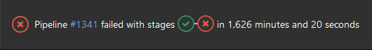

CI/CD Optimization with a Case Study Involving Ansible and GitLab
Presented by Zackary Lowery
Press your space bar to navigate forward. »
...or How to Write a Bad CI/CD Pipeline and Improve it Iteratively
In Review
This presentation is a spiritual follow-up to Ansible - Putting IaC in Your CI/CD.
What is Ansible?
Ansible is a state-management based IaC solution for host configuration.
How am I using Ansible?
I...have a lot of hosts.
(But not as many as last time.)
| 351MP |
|
| AERO15 | |
| K8S[0-4] |
|
| Lakka | |
| MDEV |
|
| MDEV2 | |
| NAS |
|
| UDEV |
|
| USERV |
|
| XCJS |
|
| Z390 |
Integration Testing Options
 ansible-test (Containers)
ansible-test (Containers)
| ✅ | 🚫 |
|
|
ansible-test (Cloud VMs)
| ✅ | 🚫 |
|
|
 Docker
Docker
| ✅ | 🚫 |
|
|
 Vagrant
Vagrant
| ✅ | 🚫 |
|
|
Iteration 1
...or the simplest answer isn't always the best answer.
- All roles against every OS through VMs on every feature branch push
The Problem
...or just over 27 hours.
...to fail.
☠️ The Other Problem ☠️
😭
Yet Another Reminder
⚠️ If it's important, back it up! ⚠️
Iteration 2
- Diff detection
- Restructure branching strategy
-
Dynamically iterate over roles
(We'll come back to this later.)
Implement GitLab CI/CD Rules:Changes Directive
- Not to be confused with the obsoleted changes directive
- Requires a long-running branch to compare against
Rules:Changes Example
${role} Test:
stage: Test
rules:
- if: '$CI_COMMIT_BRANCH == "testing"'
changes:
- roles/.common/tasks/*.yml
- roles/${role}/tasks/*.yml
- test/generate-tests.sh
- .gitlab-ci.yml
- Vagrantfile
Iteration 3
- Separate Tasks Per Supported OS
Rules:Changes Updates
${role}/Ubuntu 20.04:
stage: Test
rules:
- if: '$CI_COMMIT_BRANCH == "testing"'
changes:
- roles/.common/tasks/*.yml
- roles/${role}/tasks/main.yml
- roles/${role}/tasks/linux.yml
- roles/${role}/tasks/ubuntu_20.04.yml
- test/templates/ubuntu_20.04/.gitlab-ci.part.yml
- test/templates/ubuntu_20.04/blacklist.yml
- test/templates/ubuntu_20.04/site-test.yml
- test/generate-tests.sh
- .gitlab-ci.yml
- Vagrantfile
Iteration 4
- Prepare virtual machine images once and utilize disk snapshots
Results!
Future Iterations?
-
Persist snapshots and update them on box updates?
vagrant box update - Maintain my own Vagrant images?
-
Support multiple testing strategies?
- Docker or LXC for simple Linux based roles?
- Virtual machines for practically everything else?